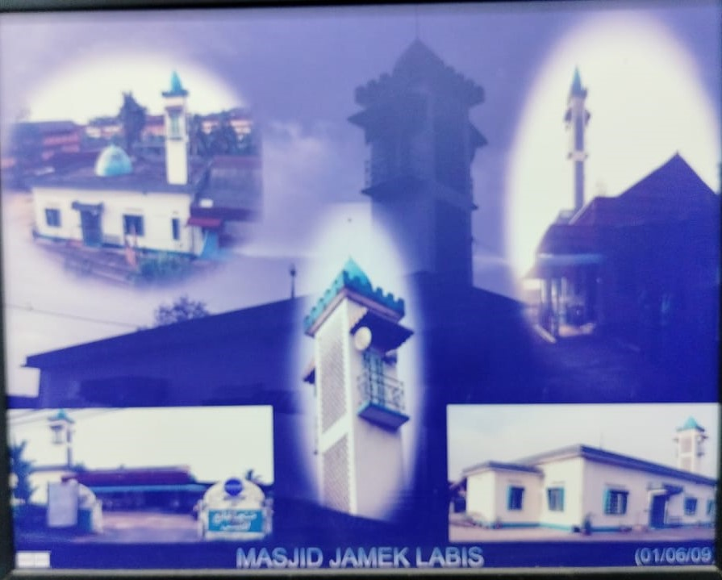
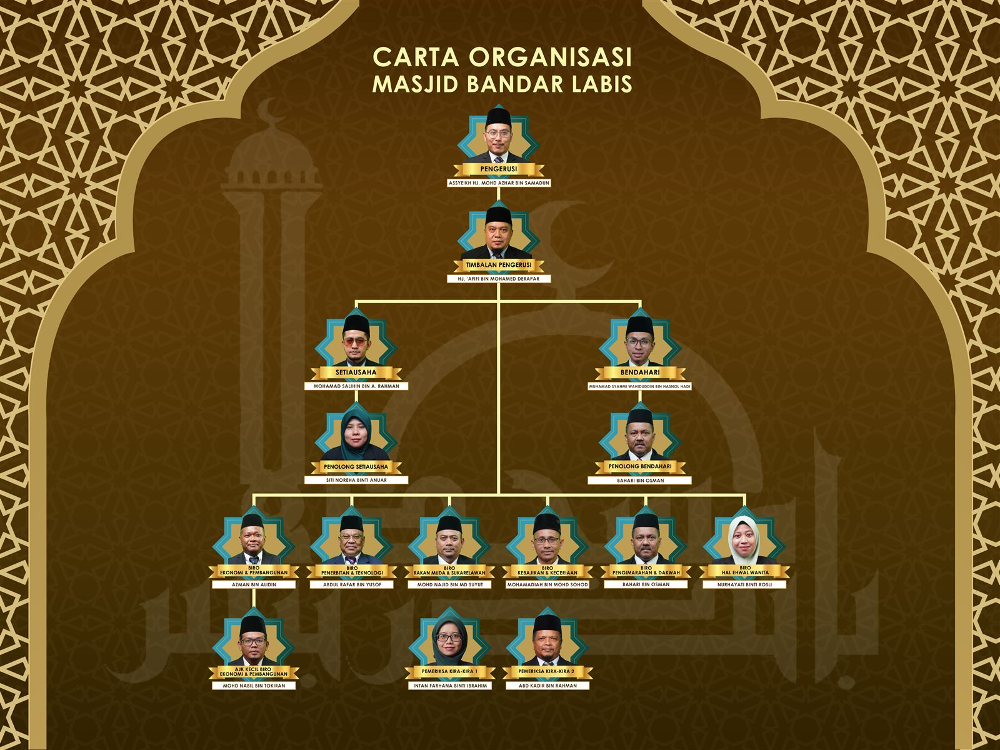

Riwayat Masjid Jamik Labis dari awal pembinaan hingga ke tapak sekarang di Jalan Muar.

Sebelum terdirinya bangunan Masjid Bandar Labis di Jalan Muar sekarang, Masjid Jamik Labis yang awal terletak di Jalan Tenang, bersebelahan betul-betul dengan rumah En. Ibrahim (mantan YB ADUN Tenang). Tapak masjid tersebut masih wujud sehingga hari ini, dan di atas tapak masjid awal ini kini terdapat sebuah warung orang kampung Paya Merah yang menumpang sementara.
Masjid ini dibina oleh masyarakat setempat sekitar tahun 1960-an. Seni binanya bercirikan Islamik dan keseluruhan bangunannya terdiri daripada binaan kayu, serta dikatakan tiada menara. Ia mampu memuatkan kira-kira 200 orang jemaah dalam satu-satu masa.
Dari segi pentadbiran, masjid ini ditadbir oleh jawatankuasa daripada masyarakat setempat di Labis. Imam pertama yang berkhidmat ialah Imam Talib dan Imam Haji Khalid bin Chidun, manakala bilalnya bernama Bilal Mohd Deli.
Dengan perubahan suasana dan perkembangan semasa, Masjid Jamik Labis yang pertama di Jalan Tenang berpindah ke tempat baharu di Jalan Yong Peng, bersebelahan dengan Sekolah Kebangsaan Labis, pada tahun 1968.
Keadaan binaan masjid yang kedua ini lebih baik, cantik dan sempurna, dengan keseluruhan binaannya daripada batu bata. Reka bentuknya lebih menarik dan selesa, sama ada di bahagian dalaman mahupun halaman persekitaran luar. Kawasan penempatan kenderaan agak luas dan menepati keperluan jemaah. Terdapat satu menara yang tinggi dengan corong pembesar suara, dan masjid ini boleh memuatkan kira-kira 500 orang jemaah dalam satu-satu masa.
Pada permulaannya, pentadbiran masjid dipimpin oleh pengerusi daripada ahli kariah setempat, dan kemudiannya bertukar kepada Haji Wagiman. Imam pertama yang berkhidmat ialah Imam Haji Khalid bin Chindun, Imam Tukiran dan Imam Abdul Rafar bin Yusof.
Selepas itu, pentadbiran Masjid Jamik Labis di Jalan Yong Peng diambil alih oleh Kerajaan Johor dan berada di bawah pentadbiran Pejabat Kadi Daerah Segamat. Pengerusinya ialah Assyekh Haji Azman bin Mokhsin, disusuli Assyekh Haji Ahmad Faisal bin Mohamad, dan Assyekh Haji Sulaiman bin Maiden.
Saban tahun, Labis menyaksikan perubahan kepadatan penduduk, perkembangan ekonomi dan pembangunan yang semakin berkembang. Justeru, beberapa pihak yang bertanggungjawab — termasuk pihak Pejabat Kadi Daerah Segamat beserta AJK, YB ADUN Tenang dan Majlis Daerah Labis — bersetuju bahawa Masjid Jamik Labis di Jalan Yong Peng perlu diperbaharui.
Bagi menjayakan hasrat ini, semua pihak bersetuju untuk berpindah ke tapak yang lebih luas dan selesa, iaitu sebuah padang milik Majlis Daerah Labis di Jalan Muar, bersebelahan dengan dewan Majlis Daerah Labis. Tapak inilah yang menjadi lokasi Masjid Bandar Labis yang ada pada hari ini, di bawah seliaan Pejabat Kadi Daerah Segamat, Jabatan Agama Islam Negeri Johor (JAINJ).

Imam, bilal dan petugas yang memakmurkan Masjid Bandar Labis.
📞 +60
📞 +60
📞 +60
📞 +60
📞 +60
📞 +60
Foto pegawai akan dimuat naik dari semasa ke semasa.